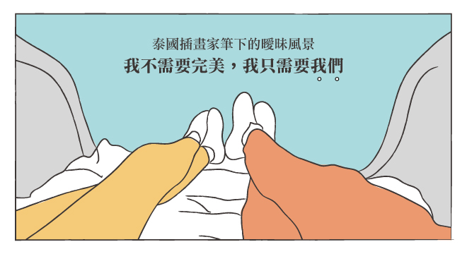

今天是
3/14
→
瞧瞧今日人氣話題吧：
简
註冊/登入會員
加入有伴計畫
首頁
讀讀東西
名家專欄
特別企劃
活動講座
迷人體驗
熱烈討論
買好東西
成為會員
照顧女人的專屬服務
女人迷日報
#codeforgender
525我愛我讀時節
全球性別影響大獎
去臉紅紅說性談愛

#編輯精選
性侵發生16年後，她與性侵她的人共寫一本書，專訪《寬宥之南》作者 Thordis Elva
#最新文章
為什麼韓國廢墟咖啡廳《Onion》這麼紅？
女力
品味
視野
美力
女權
性別
親職
關係
康健
女力
品味
視野
美力
女權
性別
親職
關係
康健
雪兒專欄｜同事不適合做朋友，朋友不適合做同事？
雪兒 Cher
1 天前
Envy 與 Jealousy 有何不同？為什麼…
KnowYourself
1 天前
【張希慈專欄】爬山教我的事：在最想放棄的時刻，練…
張希慈
2 天前
馬修·麥康納的畢業演說：想要成功，不必選擇會犧牲…
女人迷編輯 孟倫
3 天前
【張瑋軒行筆】面對你的恐懼，即使是被笑也沒有關係
張瑋軒
3 天前
專訪鄧惠文：「如果你一直等著被照顧，你自己的成長…
女人迷主編 Audrey Ko
3 天前
更多女力內容
少女讀繪本｜《白花之愛》我愛你，與你無關
迷人來稿
23 天前
少女讀繪本｜《BRINDILLE》懂得握緊拳頭之…
迷人來稿
26 天前
台劇《翻牆的記憶》：當援交成了拯救家庭最快的一條路
雀雀
28 天前
所有的產品都像生命，只為在某一刻與你相遇
合作品牌天使
1 個月前
日本文學作品中的貓：寺院做愛，助主人偷情
01哲學
1 個月前
職人故事｜香港 Teakha 茶。家，我們需要的…
Fanning Tseng
1 個月前
更多品味內容
《金氏家族的女人》迷倒皇太子的平壤仙杜瑞拉李雪主
八旗文化
5 個月前
加護病房的過勞日常：日夜顛倒、泌尿道感染、珍珠奶…
Hahow 好學校
5 個月前
把歷史寫到變網紅！謝金魚：武則天跟你一樣，28 …
上報
5 個月前
流浪情書｜我在難民營工作，唯一的方向是活下去的方向
Chinchen.H
8 天前
2017 世界攝影集：有危險的地方，也生出解救的力量
女人迷編輯 孟倫
6 個月前
臺灣版清除低端人口？身障街賣團體新巨輪協會：「社…
NPOst 公益交流站
1 個月前
更多視野內容
Slash 世代的女人，「要什麼」決定妳是誰！
艾彼 心理師
2 天前
職場大人學：擁有一起共患難的工作「好夥伴」，是難…
合作品牌天使
1 天前
勇敢撕下討人喜愛的標籤，才能真正愛上自己：專訪演…
合作品牌天使
2 天前
【姐的狂語錄】不甘成為平凡，只願成為限定版的自己
合作品牌天使
休閒、優雅、個性！三種舒適也好搭的鞋款穿搭
Fanning Tseng
13 天前
Slash 世代的女人，「要什麼」決定妳是誰！
艾彼 心理師
24 天前
更多美力內容
打破性侵迷思：無論我穿什麼，都不是性暴力的藉口
現代婦女基金會
1 個月前
性別觀察｜啞忍荒木經惟15年的 KaoRi，被推…
女人迷性別主編 婉昀
1 個月前
做一個自由的人！五則 TED 演講，讓你活出框架…
女人迷編輯 孟倫
2 個月前
為你選書｜《月經不平等》，衛生棉條的商業秘密（文…
木馬文化
2 天前
為你選書｜《未竟之業》家庭照護，不該只是女人的問題
悅知文化
4 天前
【性別觀察】同理母職，不是肚皮上放顆雞蛋這樣簡單
女人迷性別主編 婉昀
4 天前
更多女權內容
我是挺同志的天主教徒，為什麼我覺得兩面不是人？
迷人來稿
27 天前
《82 年生的金智英》：韓國去年最暢銷的架空小說…
Amazing
16 天前
首場英國皇室同志婚禮：「我結過婚，育有三女，這次…
女人迷編輯 孟倫
21 小時前
世足在俄羅斯！英外交部旅遊指引，指俄不包容性小眾
立場新聞
19 天前
「生了女兒怎麼辦」淘寶歧視廣告 連中國官媒也動怒
UDN
2 天前
Beautiful Man｜魏斯安德森：絕美畫面…
女人迷性別主編 婉昀
7 天前
更多性別內容
在家裡，你會鎖門嗎？空間自治，其實是孩子獨立的關鍵
寶瓶文化
2 個月前
成為新手父親：她公開哺乳，為何你老是有意見？
高寶書版
2 個月前
新手媽媽的告白：當了母親，才知道母親心中的痛
合作品牌天使
2 個月前
【專訪】隋棠：「準備好了，就能在關係裡自信做自…
合作品牌天使
3 天前
父女關係，如何深切影響女兒成年後的親密關係
KnowYourself
22 天前
有一種長大的過程，叫「過度教養」
KnowYourself
24 天前
更多親職內容
【為你點歌】容忍不需要天份，只需愛錯一個人
海苔熊
3 小時前
柚子甜專欄｜跟情人去旅行，該把「旅伴」看得比「旅…
柚子甜
20 天前
專訪劉若英：緣分這回事，不負對方已經很好，要不負…
女人迷主編 Audrey Ko
15 天前
【為你點歌】如何跳脫關係裡，總是覺得「我不夠好」…
海苔熊
15 天前
職場大人學：擁有一起共患難的工作「好夥伴」，是難…
合作品牌天使
1 天前
你若要毀了一個人，就教他去恨他的父母，那個恨也指…
皇冠出版
2 天前
更多關係內容
如果青春是一本書，你期待活成什麼模樣？
合作品牌天使
4 個月前
邊刷牙邊雕塑臀部曲線！日本模特兒愛用的偷懶健身法
Bella.tw儂儂
4 個月前
【運動小姐】真正重要的，永遠都是付出的過程
Lin Lin Lin
4 個月前
【如果你想】讓每一天都很。犯。規！四個找回心動的…
合作品牌天使
14 天前
胃痛大哉問：胃疼不一定等於有胃病
木馬文化
23 天前
給親愛的你：關於步行，走出 25、35、45 不…
合作品牌天使
1 個月前
更多康健內容
迷人體驗：【購物金 NT$1,000】BuyandShip 國際網購轉運服務
沒有不想買的好貨，只有買不到的可惜。台灣買不到的、價差太大的，不用苦苦尋找信用好的代購博感情，BuyandShip 就是你一個人的專屬代購，便利快捷的國際網購轉運服務，為你買到全世界。（別忘了先註冊 BuyandShip 會員哦）
品牌贊助
放下應該 | 邀請妳，開始練習放逐束縛，解放壓力
從此刻起，請試著並懂得，釋放身心長期累積的壓力，放下許多「應該」的束縛，偶爾，為自己安排，好好享受做自己的時光！
品牌贊助
【舒膚相談室】讓生活更 Free 的溫柔力量！生理期也能做自己的主角
妳如何與摩擦共處呢？生活中難免會遇到摩擦，別讓摩擦帶走最初的自己，多愛自己一點，讓摩擦少一點，舒服多一點，妳值得擁有更幸福的人生！
品牌贊助
迷人體驗：阿原新品——玫瑰皂
阿原新上市的「玫瑰皂」，內有玫瑰、月桃、艾草、桑葉萃取、紅藜、薑精油，精萃成一顆鬆綁生活的肥皂。將玫瑰皂輕輕搓揉，像把生活的緊繃溫揉搓開，那溫順的泡沫在身體化開，滿溢自然不刺激的花香、亦帶著森林的清新氣味，就像回歸自然的真樸一樣美好。（特別備註：若本身有口服、外服肌膚藥物等等建議諮詢專科醫師後再行使用）
品牌贊助
迷人體驗：綠藤生機-輕乳液 15
女人迷邀請你使用油水保養，回歸肌膚最純粹的樣貌。 - 調和最適合亞洲混合肌的油水比例 15:85 - 創新採用被譽為「超級果實」的天然禮物—接骨木莓果油 - 一瓶成就完整保濕的三重機制 【貼心提醒】 - 完成體驗後需回填心得並附上照片（150 字以上） - 回填時，歡迎也將心得同步分享至個人社群（FB/IG/BLOG）
品牌贊助
熱門文章
專訪鄧惠文：「如果你一直等著被照顧，你自己的成長不會完成」
專訪鄧惠文：「請不要再對愛情懷抱嬰兒式的幻想」
【編輯開箱】致 ME TIME 的情書：褪下堅強，謝謝你讓我柔軟
【單身日記】人生這麼長，誰沒愛過幾個渣？
八歲印度女童遭四名警察姦殺，誰把強暴當成政治武器？
專訪唐綺陽：受傷，是人生的禮物！不斷創「星」的人生修復術
四分鐘爆汗 Tabata！在家也能雕塑迷人腹肌與蜜桃臀
泰國插畫家筆下的曖昧風景：我不需要完美，我只需要我們
推薦
【職場女聲】30 歲再不改變，你就要錯過自己的人生
大家都在看
海苔熊
女人迷影音
每天好話帶著走
停止在意別人的臉色而裝好人，試著以真正的自己迎接往後的人生。
- Lyzz 山崎《不受傷的練習》